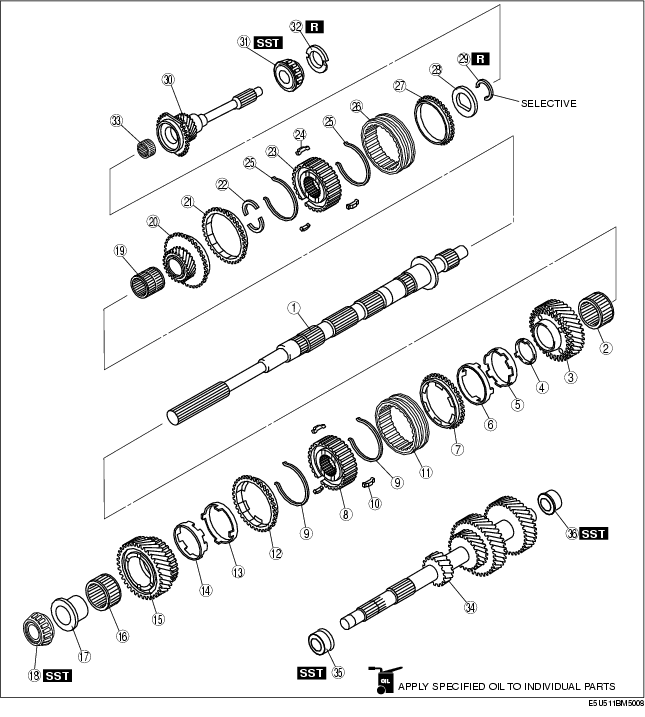
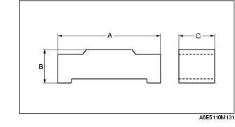
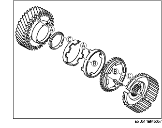
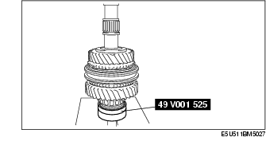
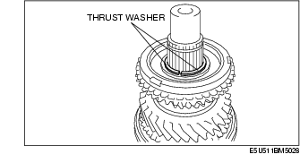
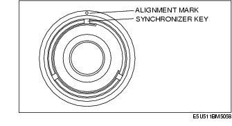
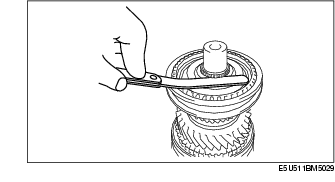
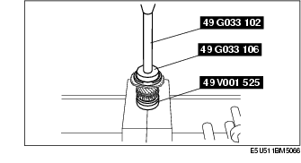
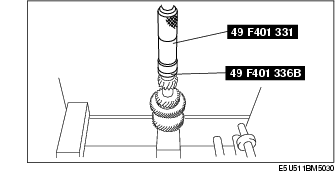
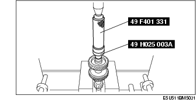

P66M-D [MT WM] ➭ TRANSMISSION/TRANSAXLE ➭ MANUAL TRANSMISSION ➭ 1ST/2ND GEAR COMPONENT, 5TH/6TH GEAR COMPONENT AND COUNTERSHAFT ASSEMBLY
1ST/2ND GEAR COMPONENT, 5TH/6TH GEAR COMPONENT AND COUNTERSHAFT ASSEMBLY
D5E051117040M01

|
1st/2nd clutch hub (See 1st/2nd Clutch Hub Component Assembly Note.) |
|
|
Mainshaft center bearing (See 1st/2nd Clutch Hub Component Assembly Note.) |
|
|
Clutch hub (See 5th/6th Clutch Hub Component Assembly Note.) |
|
|
Synchronizer key (See 5th/6th Clutch Hub Component Assembly Note.) |
|
|
Synchronizer key spring (See 5th/6th Clutch Hub Component Assembly Note.) |
|
|
Clutch hub sleeve (See 5th/6th Clutch Hub Component Assembly Note.) |
|
|
Retaining ring (See 5th/6th Clutch Hub Component Assembly Note.) |
|
|
Maindrive gear shaft bearing (See Maindrive Gear Shaft Bearing Assembly Note.) |
|
|
Countershaft center bearing race (See Countershaft Center Bearing Race Assembly Note.) |
|
|
Countershaft front bearing race (See Countershaft Front Bearing Race Assembly Note.) |
1st/2nd Clutch Hub Component Assembly Note
• Be sure to assemble the clutch hub components and synchronizer ring components while aligning the synchronizer ring grooves with the synchronizer keys.
• The standard synchronizer key dimensions are as follows:

mm {in}
• Be sure to align the synchronizer ring projections with the inner cone notches. • Be sure to assemble the gears and the synchronizer ring components while aligning the double cone projections with the gear holes as shown in the figure. • Align the friction damper projections with the clutch hub grooves. (2nd gear)

• Align the clutch hub sleeve alignment mark with the clutch hub synchronizer key installation position and assemble.

- Using a SST and press, assemble the needle bearing, 2nd gear, synchronizer ring component (2nd), 1st/2nd clutch hub component, synchronizer ring component (1st), 1st gear, needle bearing, needle bearing race and mainshaft center bearing to the mainshaft at the same time.

• When using a press, be careful not to damage the parts.
5th/6th Clutch Hub Component Assembly Note

• Apply petroleum jelly making sure the thrust washer does not deviate.
• The standard synchronizer key dimensions are as follows:

mm {in}
• Align the clutch hub sleeve alignment mark with the clutch hub synchronizer key installation position and assemble.


• If not within the specification, adjust by choosing the proper retaining ring.
5th/6th clutch hub retaining ring
Maindrive Gear Shaft Bearing Assembly Note

Countershaft Center Bearing Race Assembly Note

Countershaft Front Bearing Race Assembly Note
